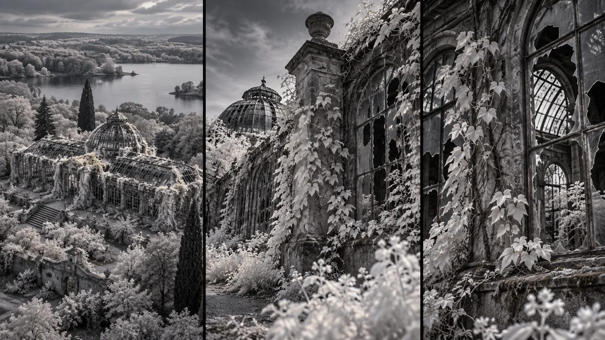

G02 · 중급 · 일반 드론
NOSTALGIA
장소의 규모와 표면의 질감 중 무엇을 전달할지 정하고 그에 맞는 시점과 속도를 고른다.
그림에서 확인할 세 가지높이보다 이야기의 거리와 질감이 먼저다.
1온실과 주변 숲
왼쪽은 온실과 숲, 먼 물가를 함께 보여 준다. 건물 전체의 규모는 쉽게 읽히지만 안쪽 표면과 식물의 상태는 얼마나 보이는지 살핀다.
2기둥과 덩굴의 거리
가운데는 기둥과 덩굴이 가까워지고 지붕 구조가 크게 보인다. 전체 장소의 정보가 줄어드는 대신 재료와 깊이가 더 뚜렷해지는 관계를 비교한다.
3깨진 창과 자라는 식물
오른쪽은 깨진 창틀과 그 사이를 채운 식물에 시선이 모인다. 가까운 잎과 뒤쪽 구조의 선명도 차이가 어느 표면을 먼저 읽게 하는지 본다.
촬영 설계
촬영을 이렇게 설계한다
익숙한 시점을 제외한다
제작자는 촬영 전에 높은 고도의 광각 숏을 기획에서 빼기로 했다. 높은 곳에 올라가는 능력보다 자연이 장소를 되찾는 이야기에 필요한 관찰 거리를 우선한 선택이다.
전통적인 이동을 옮긴다
달리나 크레인을 설치하기 어려운 장소에서 느리고 통제된 이동을 만들려 했다. 상부 카메라 장착도 새로운 시점을 위한 수단이었으며, 장비 자체가 이야기의 목적은 아니었다.
교육 적용 · 질감을 남긴다
폐허를 소개하는 넓은 컷과 식물이 벽을 감싸는 가까운 컷을 비교한다. 가까운 이동에서 주변 구조가 이해되지 않으면 먼저 공간을 소개하는 별도 컷을 대안으로 검토한다.
자연이 폐허를 되찾는 이야기를 버려진 건물과 뉴욕주 자연 풍경으로 표현한 작품이다.
원본 영상NOSTALGIA
1. 전경의 존재
기둥과 잎이 화면에서 차지하는 비중을 본다. 이 요소가 장소를 느끼게 하는지 주제를 가리기만 하는지 판단한다.
2. 속도와 관찰
표면을 읽을 시간이 있는지 살핀다. 이동의 길이보다 관객이 발견해야 할 세부정보가 남는 시간이 기준이다.
3. 시점의 이유
높은 전경을 제외했을 때 잃는 정보와 얻는 질감을 나눈다. 특정 높이가 늘 더 영화적이라는 결론은 피한다.
재생이 제한되면 원본 영상 새 창을 이용하세요.
제작진 설명 · 한국어 요약 번역
높은 광각 숏을 제외하고 새로운 시점을 찾다
연출 의도
Tim Sessler는 자연이 인간의 영역을 되찾는 포스트 아포칼립스 각본을 바탕으로 했다고 쓴다.
촬영 전부터 높은 고도의 광각 숏은 콘셉트에서 제외했다.
이동과 팀
목표는 달리나 크레인을 쓰기 어려운 곳에서 그런 느린 이동을 얻는 것이었다.
팀은 카메라 운용, 공동 연출, ALTA 조종을 나눈 세 명이었다고 한다.
표현 탐색
상부 장착과 적외선 흑백 촬영은 새 이미지를 탐색한 선택이며 기본 방식은 아니다.
제작진 설명 · 한국어 요약 번역
탑재량과 이동 조건이 장비 선택을 좌우했다
장비 선택
Sessler는 시험 생산 단계의 Freefly ALTA에 RED Epic Dragon 흑백 카메라를 실었다고 쓴다.
적외선 대응 센서와 Leica R 렌즈 조합은 최대 탑재량 바로 아래였다.
촬영 환경
초점 거리는 19mm부터 135mm까지 썼고 숲 위를 올려다보는 숏에는 19mm를 썼다.
촬영지는 버려진 두 시설과 드론을 배낭에 넣어 걸어 오른 산이었다.
접이식 설계 덕분에 차량과 항공, 도보로 장비를 옮기기 쉬웠다고 한다.
후반
후반에는 DaVinci Resolve에서 대비 강한 흑백으로 조정했다.
Kling 프롬프트단문 인과 체인 · 16:9
내가 직접 만들어 본다
높은 광각 대신 낮고 느린 접근으로 장소의 규모를 내주고 덩굴과 깨진 창틀의 표면 변화를 주제로 삼도록 지시한다.
- S01숲 가장자리에 낡은 온실이 서 있다.
- S02영상은 하나의 연속 쇼트다.
- S03화면에 드론 기체는 나오지 않는다.
- S04처음 10초 동안 카메라는 낮은 위치에서 온실 전체를 본다.
- S05카메라는 낮은 높이를 지키며 천천히 다가간다.
- S06다음 10초 동안 카메라는 기둥과 덩굴 사이로 들어간다.
- S07카메라가 가까워지기 때문에 온실 전체가 화면에서 사라진다.
- S08그 대신 덩굴과 기둥의 재료와 깊이가 또렷해진다.
- S09마지막 10초 동안 카메라는 깨진 창틀 앞에서 멈춘다.
- S10창틀 사이로 식물이 자라 나와 있다.
- S11가까운 잎이 먼저 읽히고 뒤쪽 구조는 물러난다.
- S12규모를 잃은 대신 표면의 변화가 주제가 된다.
- S13그 결과 식물이 폐허를 되찾는 모습이 읽힌다.
[네거티브]
- 온실이 새 건물처럼 깨끗해지는 것 금지
- 장면이 여러 컷으로 나뉘어 끊기는 것 금지
- 화면에 드론 기체가 나타나는 것 금지
- 카메라가 높이 솟아 온실을 내려다보는 것 금지
- 카메라가 빠르게 돌진해 온실에 부딪힐 듯 가는 것 금지
- 카메라가 기둥 대신 다른 건물로 향하는 것 금지
- 가까워져도 온실 전체가 그대로 보이는 것 금지
- 덩굴이 매끈한 벽처럼 질감 없이 보이는 것 금지
- 카메라가 창틀을 지나쳐 안쪽 깊이 들어가는 것 금지
- 깨진 창틀 대신 매끈한 유리창이 나오는 것 금지
- 뒤쪽 구조와 잎이 같은 선명도로 보이는 것 금지
- 폐허가 사라지고 식물만 화면을 채우는 것 금지
- 높은 광각 시점이 중간에 섞여 들어오는 것 금지
결과에서 볼 것
- 영상 내내 높은 광각 시점 없이 낮게 접근했는가
- 가까워지며 장소 규모 대신 재료와 깊이가 또렷해졌는가
- 깨진 창틀과 식물 사이의 변화가 주제로 읽혔는가